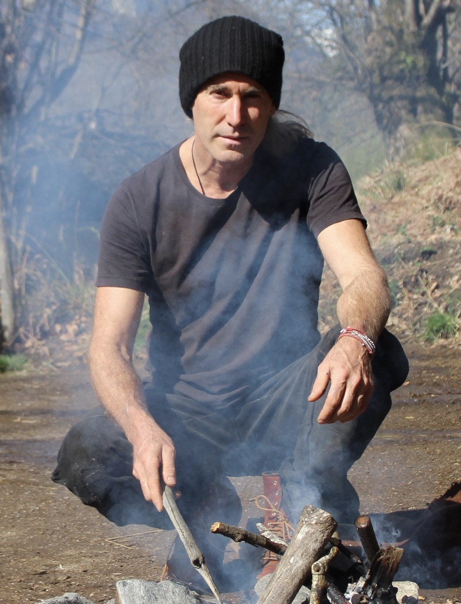
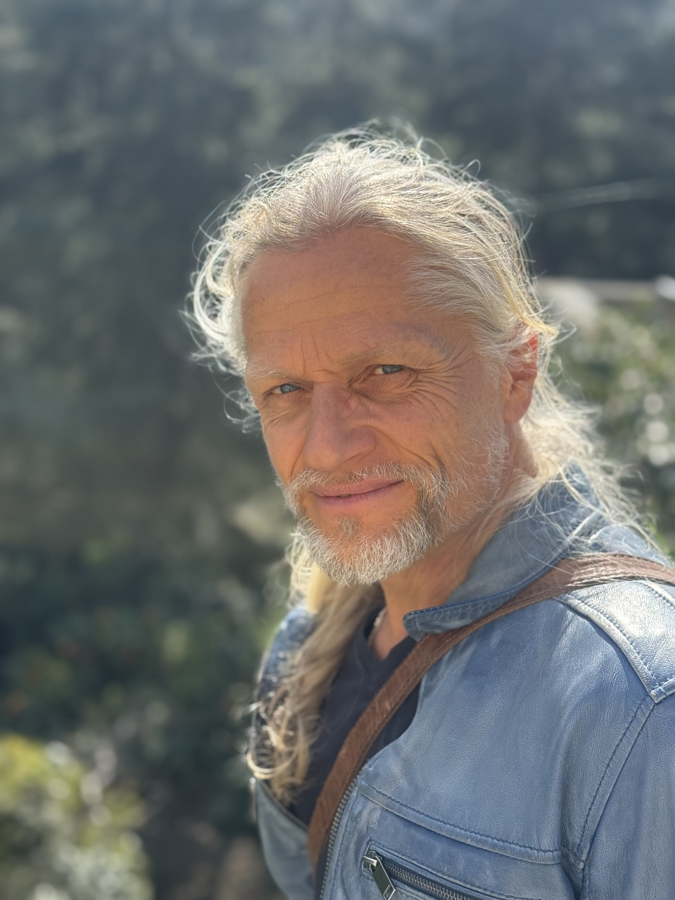
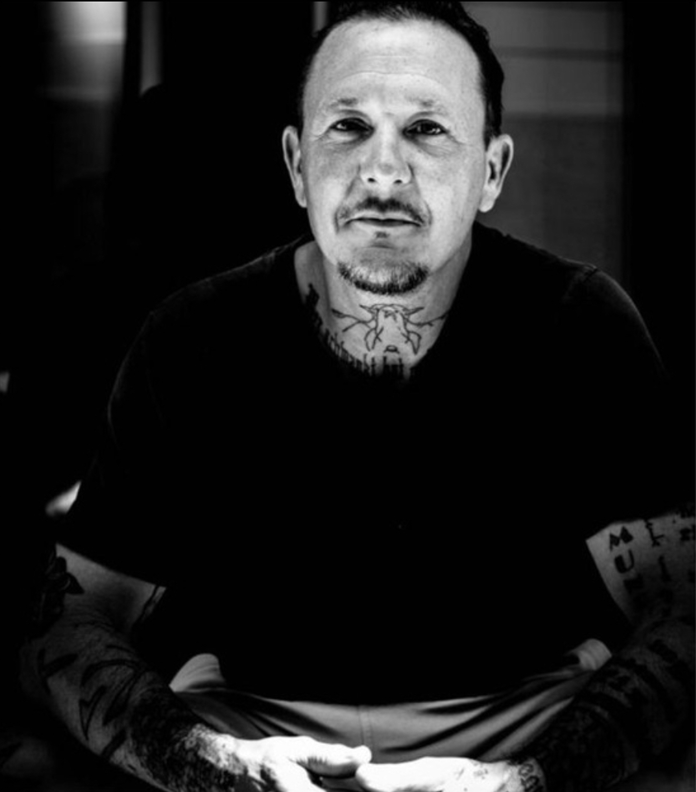

CURA CAJOI


Alexander ist der Raumhalter in unserem Team – er schafft den Rahmen für Deinen Prozess und begleitet Dich auf Deinem Weg.
Ich bin Gastgeber und Hüter dieses Ortes, den ich über viele Jahre gemeinsam mit anderen aufgebaut habe – ein Raum, der heute Menschen in ihrer Entwicklung unterstützt.
Mein eigener Weg war geprägt von Herausforderungen, innerer Suche und dem Wunsch zu verstehen, zu heilen und mich zu erinnern. Dabei habe ich mich intensiv mit persönlichen und auch frühen Prägungen auseinandergesetzt.
Ursprünglich komme ich aus der Landschaftsarchitektur. Die Verbindung zwischen Mensch und Natur stand für mich schon immer im Mittelpunkt – und die Frage, wie wir wieder in Balance mit unserer Umgebung kommen können. Dieses Wissen fließt heute in die Gestaltung und Erhaltung dieses Ortes ein.
Später führte mich mein Weg in die Kunst, insbesondere in die Bildhauerei. Für mich ist sie ein Ausdruck innerer Prozesse – und zugleich ein kraftvoller Zugang, um Emotionen sichtbar und erfahrbar zu machen.
Eine tiefe Verbindung habe ich seit jeher zu Pflanzen – ob als Heilpflanzen, Nahrung oder in ihrer reinen Präsenz. Sie sind für mich Lehrer und Begleiter zugleich.
Auf meinem Weg hatte ich die Möglichkeit, von verschiedenen spirituellen Lehrern und Traditionen zu lernen – sowohl in unserem Kulturraum als auch darüber hinaus.
Dabei begegnete ich unter anderem indigenen Völkern wie den Q’ero, Shipibo, Kogi und Lakota und durfte über längere Zeiträume Einblicke in ihre Denkweisen, Rituale und Heilansätze erhalten.
Durch diese Begegnungen sowie durch begleitende Einweihungen und Schulungen ist ein tiefes, erfahrungsbasiertes Verständnis entstanden, das weit über theoretisches Wissen hinausgeht. Dieses Wissen ist für mich kein Konzept, sondern gelebte Praxis – und fließt achtsam und respektvoll in meine Arbeit ein.
Meine Aufgabe sehe ich darin, einen bewussten, sicheren Raum zu halten, in dem Entwicklung geschehen kann – und Dich mit den passenden Impulsen und Werkzeugen auf Deinem Weg zu unterstützen.

Andreas ist der Therapeut in unserem Team – er bringt Deinen Körper und Dein System in Balance.
In meiner Arbeit habe ich immer wieder erlebt, wie eng körperliche, emotionale und mentale Prozesse miteinander verbunden sind. Wirkliche Veränderung entsteht dann, wenn wir den Menschen als Ganzes betrachten.
Als ausgebildeter Masseur, Osteopath, Cranio-Sacral-Therapeut und Ayurveda-Mediziner verbinde ich fundiertes Fachwissen mit einem tiefen Verständnis für natürliche Heilmethoden.
Mein Ansatz ist ganzheitlich:
Ich vereine moderne Erkenntnisse aus Anatomie und Physiologie mit bewährten, jahrtausendealten Heiltraditionen. Dabei steht für mich der Mensch als Einheit von Körper, Geist und Seele im Mittelpunkt.
Ziel meiner Arbeit ist es, Dein inneres Gleichgewicht wiederherzustellen und die natürlichen Selbstheilungskräfte nachhaltig zu aktivieren.
Schwerpunkte meiner Arbeit sind unter anderem:
- Osteopathie – zur Harmonisierung von Körperstrukturen und Funktionen
- Cranio-Sacral-Therapie – zur Lösung tiefer Spannungen im Nervensystem
- Ayurveda – individuell abgestimmte Behandlungen und Lebensweise
- Kräuter- und Pflanzenheilkunde – zur Unterstützung von Regeneration und Vitalität
Ich begleite Dich dabei, wieder in Kontakt mit Deinem Körper zu kommen und Stabilität von innen heraus aufzubauen.

Fabian ist der Transformator in unserem Team – er begleitet Dich durch echte, tiefgreifende Veränderung.
Ich weiß, wie es ist, ganz unten zu sein – orientierungslos und ohne Perspektive.
Und ich weiß auch, wie es sich anfühlt, Erfolg zu haben und ein Leben im Überfluss zu führen.
Schmerz, Rückschläge und extreme Erfahrungen gehören genauso zu meinem Weg wie die Suche nach Sinn.
Doch ich habe auch erfahren, was geschieht, wenn man beginnt, seinem Herzen zu folgen – und dass es Dinge gibt, die einem niemand mehr nehmen kann, wenn man sie einmal wirklich gefunden hat.
Was ich weitergeben möchte, ist genau diese Erfahrung:
Eine echte Kehrtwende ist möglich. Für jeden.
Ich habe meinen Weg aus einer jahrzehntelangen Drogenabhängigkeit aus eigener Kraft gefunden und mir Schritt für Schritt ein neues Leben aufgebaut – etwas, das ich selbst lange für unmöglich gehalten hätte.
Heute arbeite ich mit Methoden, die mich auf diesem Weg unterstützt haben, wie zum Beispiel:
- Eisbäder
- Atemtechniken
- Meditationen
- Feuerzeremonien zum Sonnenaufgang
- Bewusste Zeit in der Natur und mit sich selbst
Mein Ziel ist es, Dich dabei zu unterstützen, wieder bei Dir selbst anzukommen, Deine eigene Kraft zu spüren und Dein Leben bewusst neu auszurichten.
Alexander ist der Raumhalter in unserem Team – er schafft den Rahmen für Deinen Prozess und begleitet Dich auf Deinem Weg. Ich bin Gastgeber und Hüter dieses Ortes, den ich über viele Jahre gemeinsam mit anderen aufgebaut habe – ein Raum, der heute Menschen in ihrer Entwicklung unterstützt. Mein eigener Weg war geprägt von Herausforderungen, innerer Suche und dem Wunsch zu verstehen, zu heilen und mich zu erinnern.
Andreas ist der Therapeut in unserem Team – er bringt Deinen Körper und Dein System in Balance. In meiner Arbeit habe ich immer wieder erlebt, wie eng körperliche, emotionale und mentale Prozesse miteinander verbunden sind. Wirkliche Veränderung entsteht dann, wenn wir den Menschen als Ganzes betrachten. Als ausgebildeter Masseur, Osteopath, Cranio-Sacral-Therapeut und Ayurveda-Mediziner verbinde ich fundiertes Fachwissen mit einem tiefen Verständnis für natürliche Heilmethoden. Mein Ansatz ist ganzheitlich: Ich vereine moderne Erkenntnisse aus Anatomie und Physiologie mit bewährten, jahrtausendealten Heiltraditionen. Dabei steht für mich der Mensch als Einheit von Körper, Geist und Seele im Mittelpunkt.
Fabian ist der Transformator in unserem Team – er begleitet Dich durch echte, tiefgreifende Veränderung. Ich weiß, wie es ist, ganz unten zu sein – orientierungslos und ohne Perspektive. Und ich weiß auch, wie es sich anfühlt, Erfolg zu haben und ein Leben im Überfluss zu führen. Schmerz, Rückschläge und extreme Erfahrungen gehören genauso zu meinem Weg wie die Suche nach Sinn. Doch ich habe auch erfahren, was geschieht, wenn man beginnt, seinem Herzen zu folgen – und dass es Dinge gibt, die einem niemand mehr nehmen kann, wenn man sie einmal wirklich gefunden hat.